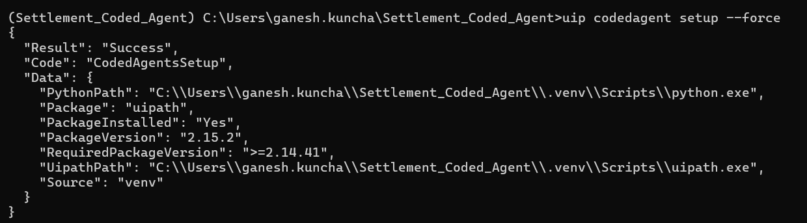
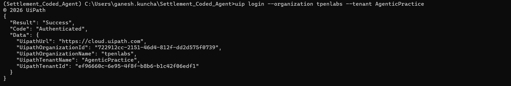
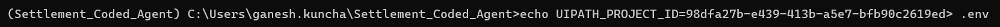
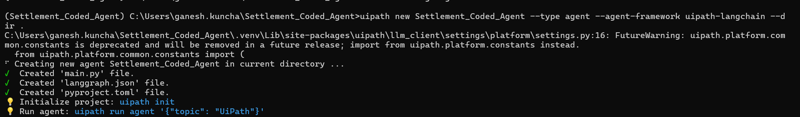
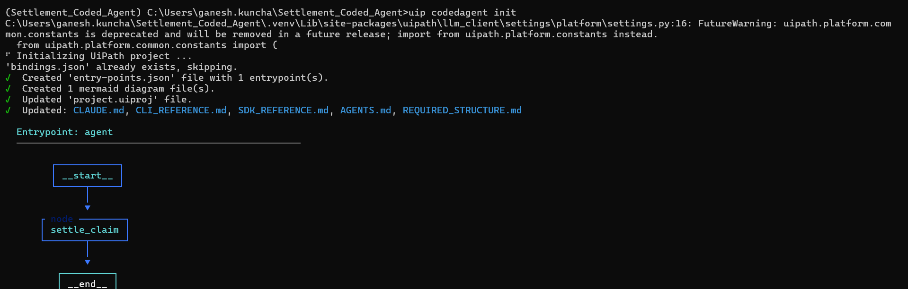

Build the Coded Agent Locally
Now build the agent on your own Windows machine. Every setup step shows a PowerShell and a Command Prompt version that do the same thing. Choose one shell and use only its commands for the rest of the exercise. All uip and uipath commands are identical in both shells.
Prerequisites
| Requirement | Why it is needed |
|---|---|
UiPath Automation Cloud access (organization tpenlabs, tenant AgenticPractice) | Sign-in, model access and the Studio Web project. |
Python 3.13, Node.js (npm), uv and the UiPath CLI (uip) | Run, test and push the coded agent. The first step shows how to check and install them. |
The Insurance_Claim_Solution with its Maestro BPMN process | The coded agent is added to, and deployed with, this solution. |
| Permission to use the instructor-approved LLM | The agent calls it through the UiPath LLM Gateway. |
Check and install the required tools
Do this once per machine. Run each check; if it prints a version number the tool is installed and you can skip its install.
python --version
npm --version
uv --version
uip --version| Command | Good result | If not recognized |
|---|---|---|
python --version | Python 3.13.x (3.11 or 3.12 also works) | winget install -e --id Python.Python.3.13 |
npm --version | A version number, e.g. 10.x | winget install -e --id OpenJS.NodeJS.LTS |
uv --version | uv 0.x.x | winget install -e --id astral-sh.uv |
uip --version | A version number, e.g. 1.206.0 | npm install -g @uipath/cli |
Make sure the coded-agent commands are available, and install them if codedagent-tool is not listed:
uip tools list
uip tools install @uipath/codedagent-toolpython -m pip install uv. If python --version opens the Microsoft Store, turn off the python.exe App execution aliases. If PowerShell says npm.ps1 cannot be loaded, run Set-ExecutionPolicy -Scope CurrentUser -ExecutionPolicy RemoteSigned once, or use Command Prompt.Installers update PATH only for new windows: close every shell, open a new one and run the four checks again.
python, npm, uv and uip all print a version number.Create the project folder and virtual environment
mkdir "$HOME\Settlement_Coded_Agent"
cd "$HOME\Settlement_Coded_Agent"
uv venv --python 3.13
.\.venv\Scripts\Activate.ps1set "AGENT_ROOT=%USERPROFILE%\Settlement_Coded_Agent"
if not exist "%AGENT_ROOT%" mkdir "%AGENT_ROOT%"
cd /d "%AGENT_ROOT%"
uv venv --python 3.13
call .venv\Scripts\activate.bat.venv folder is created and the prompt begins with (Settlement_Coded_Agent).y at that prompt only. If PowerShell blocks activation, run Set-ExecutionPolicy -Scope Process -ExecutionPolicy Bypass in the same window and activate again.Settlement_Coded_Agent and activated .venv.Install the dependencies and register the environment
uv pip install "uipath-langchain[bedrock,vertex]>=0.20.0,<0.21.0"
uv pip install uipath-dev
uip codedagent setup --forceExpected result: both installs complete without an error, and setup shows Result: Success, Code: CodedAgentsSetup and a PythonPath that points to the .venv folder.

uip codedagent setup --force returned Success.Sign in to UiPath
uip login --organization tpenlabs --tenant AgenticPracticeA browser opens for authentication. After sign-in the result shows Authenticated, organization tpenlabs and tenant AgenticPractice.

Save your project ID to .env
Use the project ID you copied in Studio Web. .env must contain only UIPATH_PROJECT_ID= followed by the plain ID — no quotes, no spaces and no % signs.
PowerShell — run the first line, paste your ID at the prompt and press Enter, then run the other two lines:
$projectId = Read-Host "Paste your unique Studio Web project ID"
Set-Content -Path .env -Value "UIPATH_PROJECT_ID=$projectId"
Add-Content -Path .gitignore -Value ".env"Command Prompt — replace YOUR_PROJECT_ID with your own ID (no space before >):
echo UIPATH_PROJECT_ID=YOUR_PROJECT_ID> .env
echo .env>> .gitignore
Check the file before you continue (Get-Content .env in PowerShell, type .env in Command Prompt). Expected: UIPATH_PROJECT_ID=1a2b3c4d-1111-2222-3333-444455556666 with your own ID.
%1a2b3c4d-...%). It is written to .env literally and push later fails with HTTP 400..env contains my own plain project ID.Create the local scaffold
uipath new Settlement_Coded_Agent --type agent --agent-framework uipath-langchain --dir .Expected result: the command creates main.py, langgraph.json and pyproject.toml.

--dir; without it the command fails with Option '--dir' requires an argument. Ignore the suggested uipath run agent hint — you replace main.py next.Select the model
The instructor chooses one model for the class so results are comparable. List the models available to your tenant:
uip codedagent list-modelsThe model used in this guide is:
anthropic.claude-haiku-4-5-20251001-v1:0model= line in main.py. Do not choose different models independently.Replace main.py with the settlement agent
Open the file (notepad .\main.py in PowerShell, notepad main.py in Command Prompt). Press Ctrl+A, delete the sample report-generator code, paste the complete code below, then save and close Notepad.
import json
import re
from langchain_core.messages import HumanMessage, SystemMessage
from langgraph.graph import END, START, StateGraph
from pydantic import BaseModel
from uipath_langchain.chat import UiPathChatAnthropicBedrock
class GraphState(BaseModel):
insurance_type: str
coverage: str
claim_amount: float
policy_status: str
fraud_verdict: str
class GraphOutput(BaseModel):
eligible: bool
settlement_percentage: float
settlement_amount: float
message: str
async def settle_claim(state: GraphState) -> GraphOutput:
llm = UiPathChatAnthropicBedrock(
model="anthropic.claude-haiku-4-5-20251001-v1:0"
)
prompt = f"""
Interpret the insurance values below and return JSON only.
insurance_type: {state.insurance_type}
coverage: {state.coverage}
Return exactly:
{{"insurance_type": "Vehicle", "coverage": "Full"}}
Allowed insurance types: Medical, Stolen, Theft, Water Damage, Vehicle, Fire.
Allowed coverage values: Full, Partial.
"""
try:
response = await llm.ainvoke([
SystemMessage(
content="Normalize the insurance values and return JSON only."
),
HumanMessage(content=prompt),
])
match = re.search(
r"\{.*\}",
str(response.content),
re.DOTALL
)
if not match:
raise ValueError("The model did not return JSON.")
interpreted = json.loads(match.group(0))
insurance_type = str(
interpreted.get("insurance_type", state.insurance_type)
).strip().lower()
coverage = str(
interpreted.get("coverage", state.coverage)
).strip().lower()
except (ValueError, TypeError, AttributeError, json.JSONDecodeError):
return GraphOutput(
eligible=False,
settlement_percentage=0.0,
settlement_amount=0.0,
message="The claim requires manual review because the values could not be interpreted."
)
allowed_types = {
"medical",
"stolen",
"theft",
"water damage",
"vehicle",
"fire"
}
if state.policy_status.strip().lower() != "active":
return GraphOutput(
eligible=False,
settlement_percentage=0.0,
settlement_amount=0.0,
message="The policy is not active."
)
if state.fraud_verdict.strip().upper() in {"SUSPEND", "REJECT"}:
return GraphOutput(
eligible=False,
settlement_percentage=0.0,
settlement_amount=0.0,
message="The claim requires additional fraud review."
)
if insurance_type not in allowed_types:
return GraphOutput(
eligible=False,
settlement_percentage=0.0,
settlement_amount=0.0,
message="The incident type is not eligible for settlement."
)
if coverage not in {"full", "partial"}:
return GraphOutput(
eligible=False,
settlement_percentage=0.0,
settlement_amount=0.0,
message="The coverage type is not supported."
)
if state.claim_amount <= 0:
return GraphOutput(
eligible=False,
settlement_percentage=0.0,
settlement_amount=0.0,
message="The claim amount must be greater than zero."
)
percentage = 95.0 if coverage == "full" else 90.0
amount = round(state.claim_amount * percentage / 100, 2)
return GraphOutput(
eligible=True,
settlement_percentage=percentage,
settlement_amount=amount,
message=f"The claim is eligible for settlement of {amount:.2f}."
)
builder = StateGraph(GraphState, output=GraphOutput)
builder.add_node("settle_claim", settle_claim)
builder.add_edge(START, "settle_claim")
builder.add_edge("settle_claim", END)
graph = builder.compile()GraphOutput is a Pydantic model, so every return uses named fields (eligible=..., settlement_percentage=...). Positional values fail with BaseModel.__init__() takes 1 positional argument but 5 were given.insurance_type and coverage. Python then rejects inactive policies, SUSPEND / REJECT fraud verdicts, unsupported types or coverage and non-positive amounts, and pays 95% for Full or 90% for Partial coverage, rounded to 2 decimals. Do not reuse the older main.py from previous guides.main.py contains settle_claim, not the report-generator sample.Initialize the project and verify the schema
uip codedagent initExpected result: entry-points.json is created and the graph shows __start__ → settle_claim → __end__.

The FutureWarning about uipath.platform.common.constants is only a deprecation warning. If a Bedrock dependency error appears, rerun the uipath-langchain[bedrock,vertex] install. Inspect the generated file with Get-Content entry-points.json or type entry-points.json; if it still shows generate_report or topic/report fields, main.py was not replaced — repeat the previous step and run init again.
The project folder should now contain:
main.py
langgraph.json
pyproject.toml
uipath.json
entry-points.json
bindings.json
.envuip codedagent init shows the settle_claim graph.